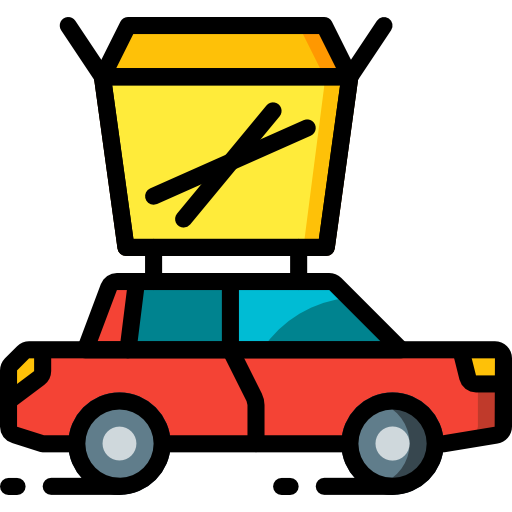

The Fraction - redistributing food, meal by meal
Food is wasted
-
The food discarded in Norway leads to annual emissions corresponding to 978 000 tons of CO2 equivalents from production, packaging and distribution of food that is discarded instead of being eaten.
The Norwegian Government and the food industry have signed an agreement to reduce food waste in Norway by 1/2 by 2030. 1/3 of all food produced globally is spoiled or thrown away. In Norway alone, the average consumer throws out 42 kg edible food every year. Food waste in the entire food chain represents 68 kg per person per year.
According to the Paris Agreement (United Nations Framework Convention on Climate Change, 2020), the convention states have agreed to fight climate change in “a manner that does not threaten food production”. One way to work towards this goal is by redistributing the already existing food.
Resource
Based on the UN Sustainability Development Goal 12, we have come up with Fraction. Fraction is a platform to redistribute food that would normally be thrown away.
The Fraction website and app creates a platform to redistribute food that would normally be thrown away. We cooperate with all kinds of businesses that deal with food, for example cruise lines, grocery stores and canteens.
We store the donated food at our central hub, where it can be picked up directly by people in need, or delivered to where you are by choosing this in the app.

Our app gives you the chance to make a direct impact on a big problem concerning our city, country, and planet.
Our aim is to connect businesses that regularly have leftover quality food, that would normally go right in the trash.
You are given incentives to donate, receiving rewards the more you donate. You are also encouraged to transport food, with rewards for the top rankers. A monthly ranking system gives rewards to the top 3 donors and top transporters.
Take Action
-
Donate Food

Do you have leftover food? You only need to register as a donor here or at the app. Delivery from you to our central hub at Fraction is free of charge. Prepare the food for pickup and our delivery-drivers will take care of the rest.
-
Delivery
Do you want to take part as one of our delivery-drivers? This will be volunteer work and you would have to supply with your own car, but you will receive a part of the food you pick up and deliver for us completely free of charge.
-
Get Food

Are you an individual of low-income? We offer a place where you can get an overview over food in your vicinity at a low price. We also offer a central hub where you can get 1 portion of breakfast, lunch and dinner free of charge.
-
Volunteer at the Hub

Do you feel like making an enviromentally friendly impact? Volunteer with our organization to stop the waste of food right now! We are always looking for people to help out at our central food distribution hub. Contact us today!